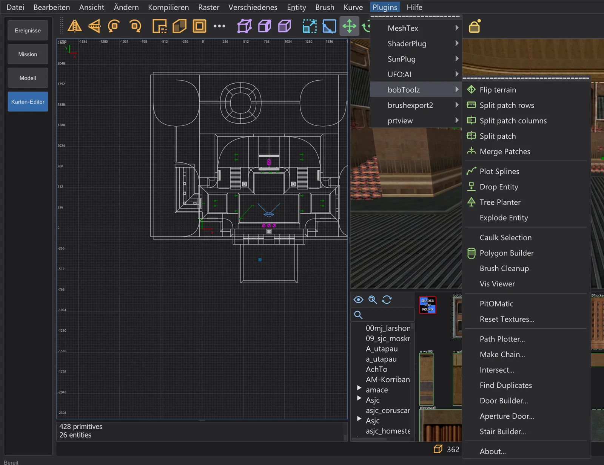
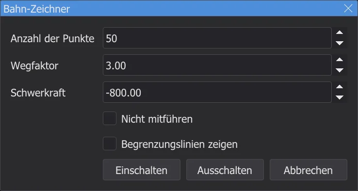
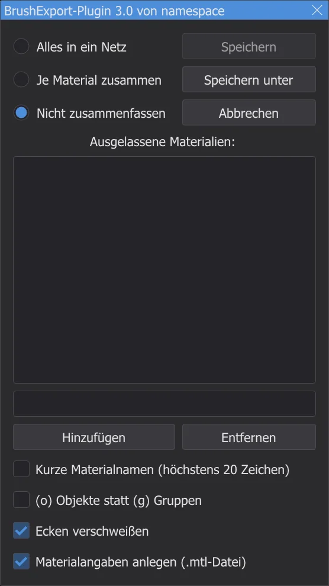
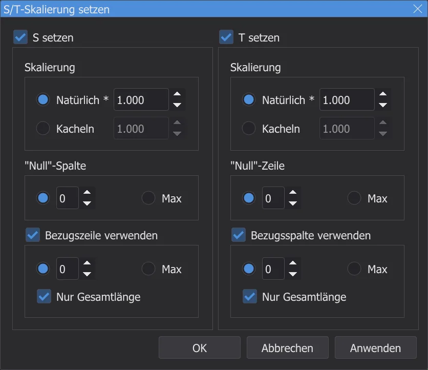

Karten-Editor: Plugins
Das Menü Plugins hat jedes Plugin von NetRadiant-Custom - bobToolz, brushexport2, MeshTex, ShaderPlug, SunPlug, UFO:AI und prtview - mit allen Einträgen und Dialogen, aus dem Quelltext portiert.
Das Menü ⟦Plugins⟧#

Die Einträge behalten die englischen Namen von NetRadiant-Custom, wie die Plugins sie dort haben; die Dialoge stehen in der Programmsprache - mit Begriffe wie NetRadiant (Englisch) im Englisch von NetRadiant-Custom. Jedes Plugin hat einen Eintrag About. Meldungen kommen in die Konsole, Fehler rot. Jede Änderung eines Plugins ist ein Rückgängig-Schritt.
bobToolz#
| Eintrag | Was er tut |
|---|---|
| Flip terrain | Zwei gewählte Gelände-Brushes (dreieckige Prismen mit gemeinsamer Kante): dreht ihre gemeinsame Diagonale um. |
| Split patch rows / columns, Split patch | Schneidet den gewählten Patch in Streifen entlang seiner Zeilen, seiner Spalten oder beider. |
| Merge Patches | Fügt zwei oder mehr gewählte Patches mit gemeinsamer Kante zu einem zusammen. |
| Plot Splines | Zeichnet die Bahnen von info_train_spline_main-Ketten mit ihren info_train_spline_control-Punkten (siehe Make Chain). |
| Tree Planter, Drop Entity | Wähle die Boden-Brushes und schalte Tree Planter ein: jeder Linksklick in die XY-Ansicht setzt eine Entity aus data\karte\bt\tp_ent.txt darauf, mit zufälligem Modell, Winkel und Maßstab (wie ausgeliefert nennt die Datei Baummodelle aus Quake - trage deine eigenen Modelle ein). Drop Entity lässt die gewählten Entities auf dieselben Brushes fallen. |
| Explode Entity | Teilt die gewählte Brush-Entity: jeder ihrer Brushes wird eine eigene Entity mit denselben Schlüsseln (nicht worldspawn). |
| Caulk Selection | Gibt jeder Fläche der gewählten Brushes und Patches die Caulk-Textur. |
| Polygon Builder | Dialog Vieleck-Bauer: macht aus einem gewählten Brush ein Prisma mit der angegebenen Seitenzahl - wahlweise hohl mit Rand, umgekehrt, an der Oberkante ausgerichtet. |
| Brush Cleanup | Entfernt ungültige und doppelte Ebenen aus allen Brushes der Karte und meldet, wie viele. |
| Vis Viewer | Liest die gebaute <Karte>.bsp neben der Karte - nach dem Bauen oder nach .bsp öffnen das Original - und zeigt, welche BSP-Blätter von der Kamera oder der Auswahl aus sichtbar sind; das Fenster BSP-Blätter listet sie. |
| PitOMatic | Macht aus einem gewählten Brush eine Todesgrube: Trigger für den Fallschrei (*falling1.wav) und zum Entfernen der Powerups, unten ein trigger_hurt. |
| Reset Textures... | Dialog Texturen zurücksetzen: ersetzt einen Texturnamen und setzt Maßstab, Verschiebung und Drehung zurück - auf den gewählten oder allen Brushes. |
| Path Plotter... | Zeigt die Flugbahn eines trigger_push - siehe unten. |
| Make Chain... | Dialog Kette bauen: baut eine Kette aus info_train_spline_main-Entities mit Kontrollpunkten, benannt nach dem Grundnamen. |
| Intersect..., Find Duplicates | Wählen Brushes, die einander schneiden (in der ganzen Karte oder unter den gewählten, wahlweise nur Duplikate), bzw. jeden Brush, der einen anderen genau doppelt. |
| Door Builder... | Macht aus einem gewählten Brush zwei Türhälften (func_door) mit Tür- und Rahmentexturen aus bt\door-tex*.txt, Nord-Süd oder Ost-West. |
| Aperture Door... | Baut aus dem gewählten Brush eine Blendentür (eine Iris aus Segmenten) - aus Parametern oder aus einer Windung. |
| Stair Builder... | Macht aus einem gewählten Brush eine Treppe: Stufenhöhe, Richtung, Stil (Original, Bob's Style, Corner Style), Haupt- und Setzstufentextur, wahlweise Detail-Brushes. |
Path Plotter
- 1
Wähle einen
trigger_push, der eintargethat. - 2
Plugins > bobToolz > Path Plotter... öffnet Bahn-Zeichner: Zahl der Punkte, Wegfaktor und Schwerkraft der Bahn. Einschalten zeichnet sie in den 2D-Ansichten und der Kamera.

Der Dialog Bahn-Zeichner mit den Werten von NetRadiant-Custom. - 3
Verschiebe das Ziel - die Bahn folgt, außer Nicht mitführen ist angekreuzt. Ausschalten nimmt sie weg.

brushexport2#

Export selected as Wavefront Object schreibt die gewählten Brushes als .obj-Modell, zum Beispiel um sie in einem Modellierprogramm weiterzubauen. Das Fenster legt fest, wie Flächen gruppiert werden (Alles in ein Netz, Je Material zusammen, Nicht zusammenfassen), welche Materialien wegfallen (Ausgelassene Materialien: - zum Beispiel textures/common/caulk) und ob Materialnamen gekürzt, Objekte statt Gruppen geschrieben, Eckpunkte verschweißt und eine .mtl-Datei geschrieben werden. Speichern unter fragt nach der Datei - beim ersten Mal im Ordner karte_export im Einstellungsordner -, Speichern schreibt dieselbe Datei noch einmal.
MeshTex#

MeshTex legt Texturen auf Patches - Rundungen, Bögen, Gelände -, wo der Surface Inspector an seine Grenzen kommt. S/T-Skalierung setzen setzt den Maßstab entlang S und T: natürlich (wie auf einer Brush-Fläche, *) oder als Zahl von Kacheln, gezählt ab einer „Null“-Spalte oder -Zeile, wahlweise gemessen entlang einer Bezugszeile oder -spalte. Angaben zeigt den Maßstab des gewählten Patches und kann ihn an S/T-Skalierung setzen übergeben. Allgemeine Funktion setzt S und T als lineare Funktion der Zeilen- und Spaltenabstände. Die Align-Einträge passen die Textur an die Patchkanten an (Minimum oder Maximum, gestreckt oder gestaucht oder automatisch); Help... zeigt die Erklärung von MeshTex selbst.
ShaderPlug, SunPlug, UFO:AI, prtview#
| Plugin | Was es tut |
|---|---|
| ShaderPlug | Create tag file schreibt die Tag-Datei des Texturbrowsers: jeder Shader bekommt den Namen seiner .shader-Datei als Tag. Der Texturbrowser lädt sie sofort neu (NetRadiant-Custom erst nach einem Neustart). |
| SunPlug | Enthält bei NetRadiant-Custom ET-MapCoordinator: berechnet mapcoordsmins und mapcoordsmaxs für die Befehlskarte von Enemy Territory aus der Größe der Karte und schreibt sie mit Setzen in worldspawn. Jedi Academy verwendet diese Schlüssel nicht. |
| UFO:AI | Werkzeuge für das Spiel UFO:AI: Filter nach dessen Inhaltsflags (NoDraw, WeaponClip, ActorClip, StepOn, Level 1 bis 8), Perform check und dessen worldspawn-Schlüssel (Worldspawn, Worldspawn reset). Sie sind da, weil NetRadiant-Custom sie für jedes Spiel zeigt. |
| prtview | Zeigt die Portale der letzten BSP-Stufe - siehe Karten-Editor: Karte bauen. |